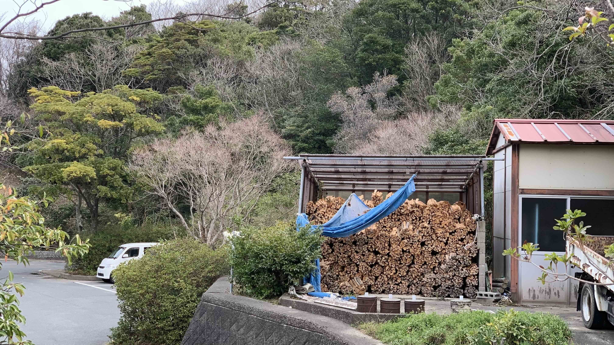
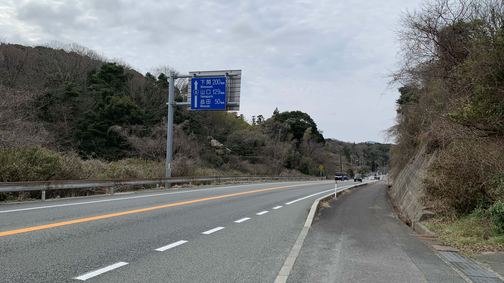
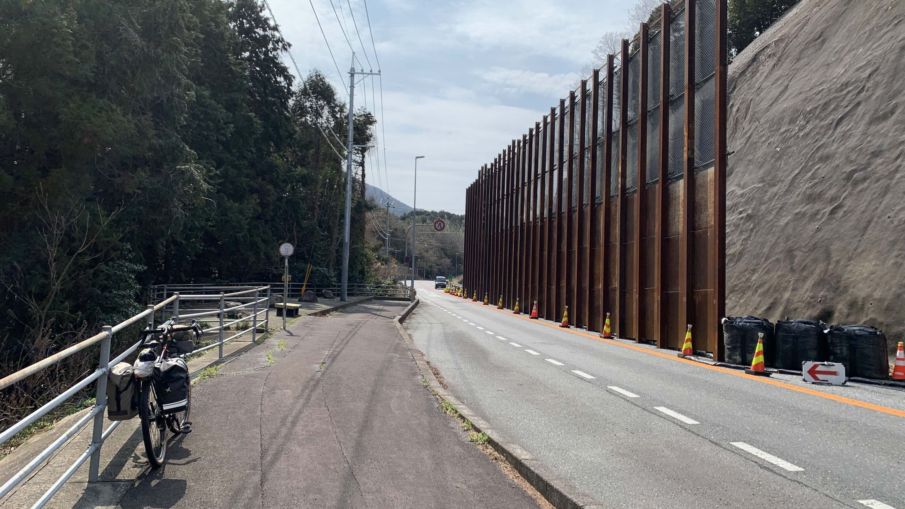
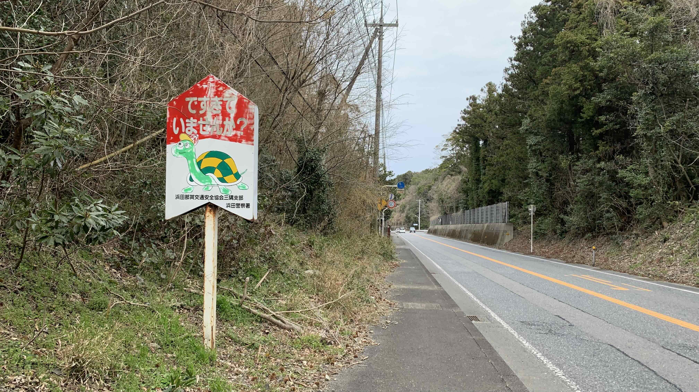

k-Day 011｜斜陽
今天是一個不用擔心被趕走的早晨。

前面的綠帳篷小兄弟竟然在這種天氣來衝浪。昨晚半夜出帳篷上廁所，頭燈照到他吊在樹上的橘紅色潛水衣著實嚇了一大跳。
六點半慢慢地在帳篷裡煮早餐。煮了超商買的培根、帶了好幾天的菠菜，全都跟著泡麵一起吃下肚子。飯後水果是一根香蕉。吃飽後在帳篷裡躺到八點半才起身收拾。

這麼好的營地竟然免費，如果不是那麼累的行程，跟櫃檯購買柴火和租借焚火台會更有氣氛。

第一次出現山口的路牌。拍下來紀念。

路上看到的海邊球隊，每個人都喊得超熱血。

途經一些較有規模的地區就會出現這類不明所以的雕像。

今天仍然是上上下下一整天，已經習慣了，所以沒特別拍什麼照片。不過這個工程看起來很酷，不知道在做什麼。

沿著海濱都是這些紅黑屋瓦的小房子。

中午抵達了三隅休息站，規模不大，但聽說可以看到火車從海邊駛過，因此很多遊客來拍照。

在這個位置吃了薑汁豬肉飯，肉質很有彈性，跟昨天的豬排一樣，推。
有點想睡，因此在資訊處趴了一下。

這幾天一直看到的石見神樂，這裡還販賣面具。

這路牌做得蠻可愛。

山口100，距離下關也只剩171公里了。

國道九號車真的多，卡車們還是會善良的開在我後面伺機超車，但進入島根後已經沒有那種轎車為了我減速或是閃到對向車道的福利，因此這樣的路肩就顯得相當貼心了。

下午看到的最後一個登坂車線。此時已經腳軟，因此拍張照片。

還沒恢復，只好拍一下腳邊的小花。春天呢。

不知道看到這樣的照片有什麼感覺，從早上開始就一直跟著這些房子走。看到被太陽照亮的屋瓦和前方的黃色平交道，以及背後不時現身的藍色的海，心裡有種喜歡。

上坡剛結束，我回頭看了一眼被夕陽照成黃色的海灣。然後就哭了。
我也不知道哭什麼。大概今天看著小房子的時候一直想，這些景色我此生可能就只見這一次，這種感覺直到拍這張回頭照的時候特別明確。
日本段的旅途就快結束了。
途中的人、雪、山、風、夕陽、屋瓦，還有海浪，也許都不會再見到了。

就這麼感動著，突然看到喬巴。
魯夫他們每次登上一座島，又離開前往下一座島的時候，也許會有一點這種心情嗎？

抱著這樣的感動，進入益田市區了。

不知道叫做什麼名字的河。

這裡是今晚民宿的門口。整條街都是酒吧和居酒屋。

老闆看到我填寫的地址，用流利的英文說你來自高雄啊！我有個很好的朋友就是高雄人。然後說我的自行車可以停在房子後面。
把車鎖好上樓，有自己的房間呢！趕緊開始把電器全都拿出來充電。

只是，馬鞍袋裡的行動電源不見了？？？被偷了？？？在日本？？？
後記：馬鞍袋的行動電源沒有不見，隔天中午在山坡上吃漢堡休息時從Ortlieb後背包的夾層裡滾出來。那個夾層是放電腦的軟墊和背包背板之間原本緊密連接的縫隙，因此當晚怎麼撈都摸不到。這篇日誌距今（8月27）已超過五個月，現在才發現當時的日誌斷在這裡，實在對不起日本人，特此說明。
今日花費： 超商補給 313、薑汁豬肉飯 1000、超商補給 412、住宿 3850